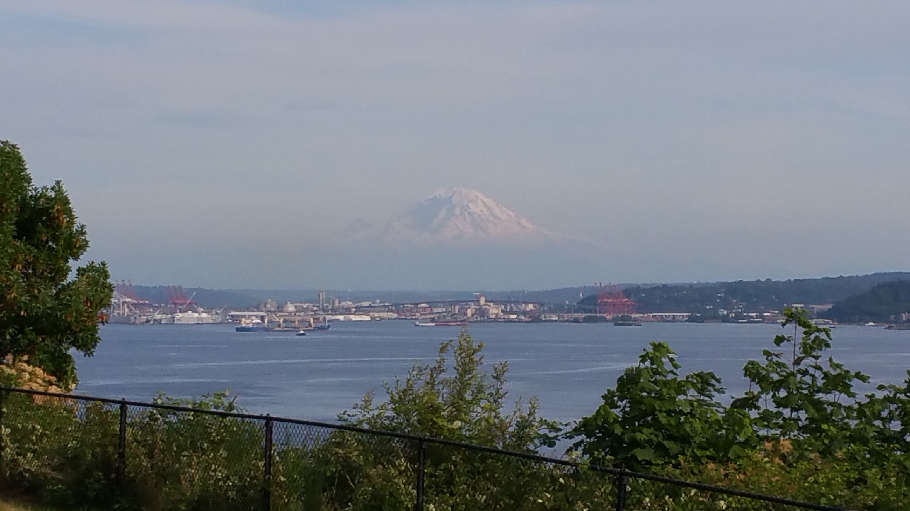
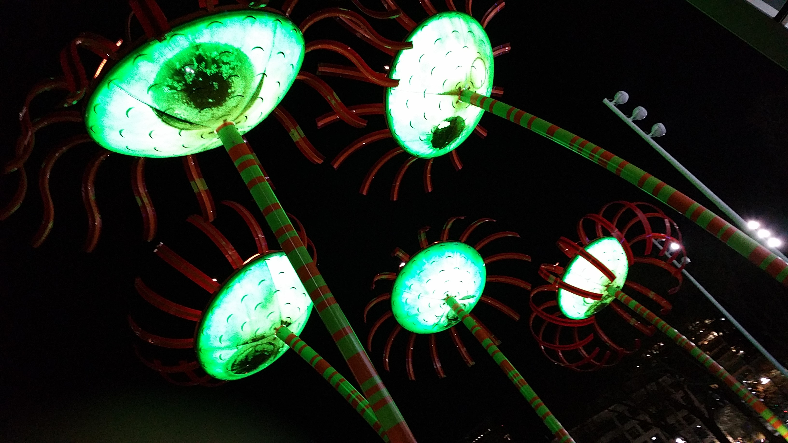
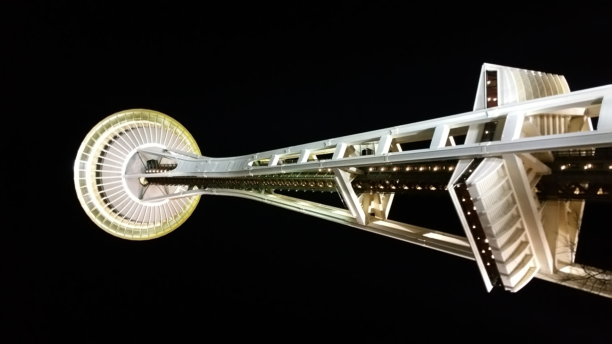
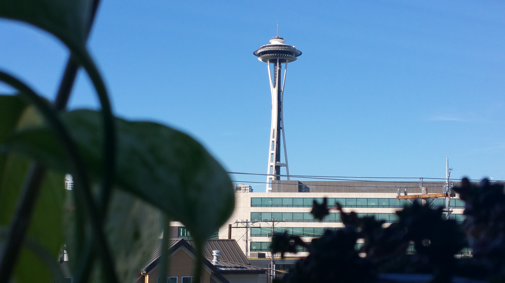

Washington
Living in Washington
For about ten years I lived in Seattle and Everett, Washington area and I can say it's the perfect blend of gloomy rainy state I've lived in. Now, I know this kind of 10-11 months of the year weather isn't for everyone but for me this was perfect. Don't get me wrong, when it got hot it really did get hot - plus air conditioners were a rarity to find in Washington. There are plenty of things to do in Washington and a decent range of foods to try but here are my top favorites.
The Food
- Something I've never heard of before living in Washington is Katsu Burger. You can find these everywhere in Washington and it was definitely worth a try.
- A laid-back resturant where you can get Caribbean food and feel like you're on a beach. Bongos was a favorite of mine for a new take on fries with yuca fries!
- I never found a good Mexican resturant in Washington, but they did have a Korean Mexican fusion called Chops. It turned out to be one of my favorite ones, if you go I suggest The Kraken!
The Places
- One place worth visting because there is so much to see is Pike Place Market! From what I understand is they stopped the fish toss and removed the "Gum Wall", but it's still worth checking out.
- A must visit, especially during Christmas is Leavenworth. A Bavarian-styled village with cool things to see and awesome views!
- Of course you can't visit Washington without seeing the mountains! One that I've gone to many times was Mount Rainier. It's beautiful and of course famous!







